Cookies?
Brief
A satire on websites today which make users follow a protocol before accessing information. This protocol has multiple steps and becomes an Information Barrier. The project is a tangible representation of one such website which makes users question the necessity of the protocol. The project also gives users a piece of knowledge on website cookies to leave with, so that they can be more mindful next time while accepting cookies.
Learning
What is Protocol?
According to me protocol is a set way of doing things. It is something which dictates what procedure is supposed to be followed while doing something. Whithout protocol, the thing loses its definition. For example in a running race, a person can be called the winner only if there are at least 2 or more people participating in the race and the path, starting line, and finishing line, all are the same for all participants. Unless all these conditions are met, i.e. unless the protocol has been followed a person cannot be declared as the winner of the running race. There is a governing body, in this case it is the sports association which organizes the race and sets the rules.
What happens when you break a protocol?
When a protocol is broken, the end result may or may not be the same, but the definition changes. But it is important to break protocols when needed. That is how new protocols emerge. An example of breaking a protocol is when someone watches movies obtained from unofficial sources. The end result is still the same but the movie then gets the title ‘pirated’. Ideally it should not be called just a ‘movie’. Hence it does not fall under the definition of a legally sourced movie. This gives ‘breaking the protocol’ a bad image. But the same is done when people obtain research papers, books, etc. through unofficial sources. In my view it is necessary to make information free of barriers. Knowledge should be free to everyone. And hence, when some person breaks that protocol of keeping information exclusively for subscribers, it becomes a good thing.
Concept Note
My project starts with the topic of information barriers. Nowadays, one of the major sources of obtaining information is the internet. The internet is the one place where the whole world is connected and the give and take of information is constantly happening. I feel this process should not be hindered and should be obstruction free. But some websites on the internet have made it a protocol for their users to go through certain steps before they can access the information being provided.
- Accept cookies before one can continue
- Renter a captcha displayed on the screen to confirm if the user is a human
- To wait for ads which cannot be skipped, or ads where the ‘close button’ (x) is hidden
- To login / signup with user credentials
- To signup for a newsletter
- To confirm with an OTP, etc.
These are some of the obstructions we all face while simply trying to access some information. This might be necessary for safety purposes but to the end user it is just limiting and frustrating. A simple process is hindered by a protocol which might be benefitting for one side, but not necessarily for the other. Upon that, the ethics behind the use of cookies is also a huge issue.
Through my project, I wish to make a satirical comment on this protocol and the use of cookies.
The project is a transparent acrylic box which is a physical representation of a website.
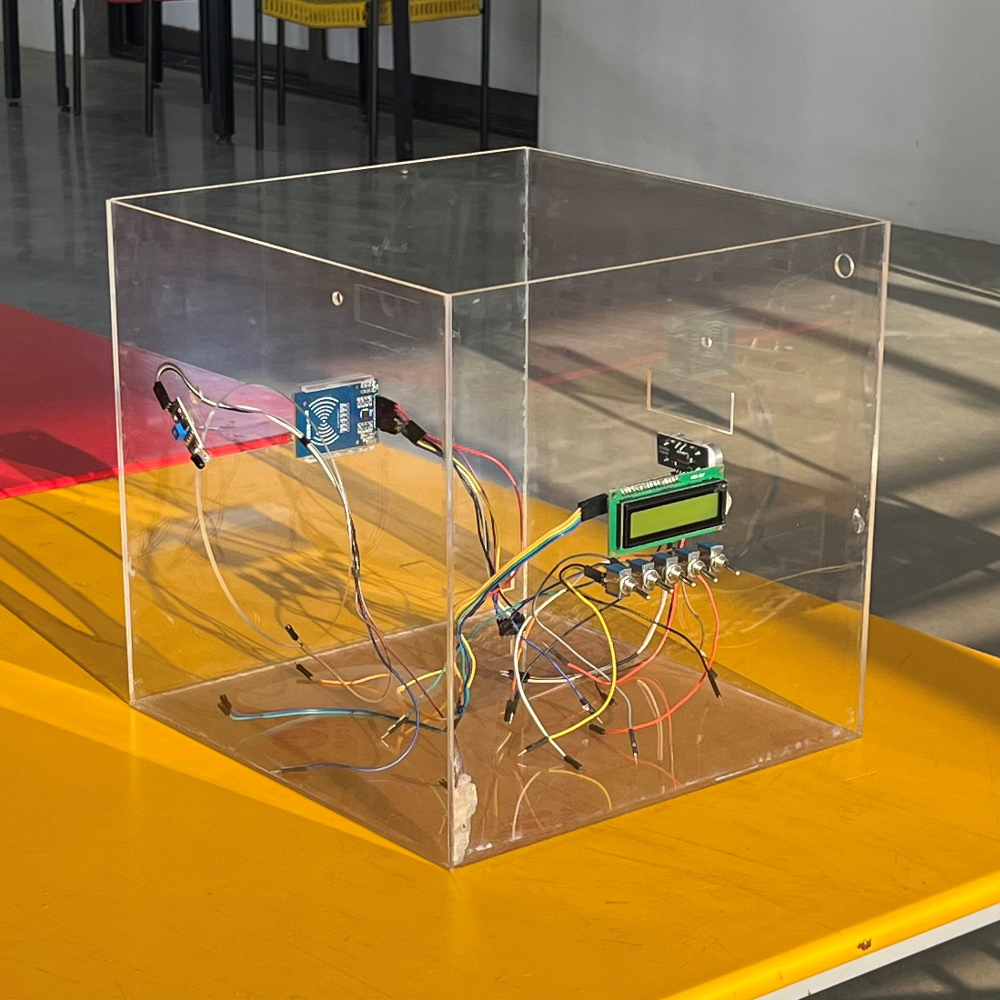
There is a big hole on the front face of the box, which is the opening through which any user would interact with the website. Inside the website is a thermal printer which prints information on a piece pf paper. Since this thermal printer is stored inside the box, it represents that information which is stored on the website.
But like digital websites, this physical website is also equipped with ‘obstacles’ or a series of tasks which need to be completed before the user can access the information inside the box. All this is done by the use of an Arduino UNO which connects multiple sensors together to recreate the frustrating experience in the tangible / physical world.
User workflow
- The user brings their hand close to the opening in the box.
- An Infrared light sensor at the opening of the box senses the approaching hand and sends a HIGH signal back to the Arduino.
- The Arduino uses conditional programming and forwards the HIGH signal from the IR sensor to a Servo motor.
- The Servo motor has an arm attached to the rotating axel. At the end of the arm is a RFID tag which resembles a cookie. This arm is swung towards the entrance and blocks it, there by stopping the user from reaching the information (thermal printer).
- The user is forced to accept the cookie before they can continue.
- They are then redirected to the side of the box where a LCD screen is displaying a binary number. Under the screen are 5 levers (switches) which need to matched to the number above. Using 1 and 0 is a common way of denoting the ON/OFF state of a switch, hence a binary number was used. The user has to match all the switches to the number above. This is a comparison to the matching of captcha texts.
- After this, users have no other option, but to wait for an unskippable ad for 5 seconds.
- Users then have to move to the next side of the box, where an ultrasonic sound sensor is fixed in the center. The users have to hold their hand in front of the sensor at a very precise, 15.72cm, distance from the box. This is done to recreate the experience of ads where the close (x) button is hidden and is hard to find.
- After the users are successful at holding their hand at the specific 15.72cm distance they move the last side of the box where a RFID reader is fixed in the center. The screen now reads ‘Please login’ which means they have to authenticate whether they are the correct user by scanning the RFID tag (cookie) given at the beginning. If a different tag is scanned the screen says ‘Access denied’. When the correct tag is scanned, the screen says ‘Access granted’.
- Finally after all this, the user comes back to the original side. The correct RFID tag sends a LOW signal to the Arduino. This signal is forwarded to the servo motor, the arm that had initially blocked the opening moves back to its original state, there by letting the user access the information (thermal printer).
- By the time the arm moves out of the way, the thermal printer prints the information ready and all the user needs to do is to rip the paper as they would normally do with any thermal printer.
- The information printed on the paper is actual information about ‘Cookies’ used in websites. It covers topics such as ‘What are cookies used for’, ‘How do they work’, ‘Pros and Cons’, ‘What do cookies track’, ‘How can cookies be misused’.
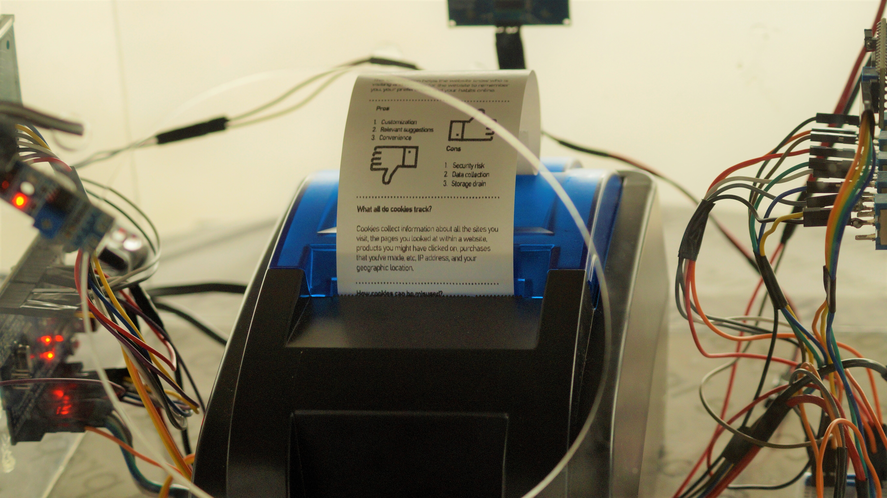
Photo by Harsh Bahety
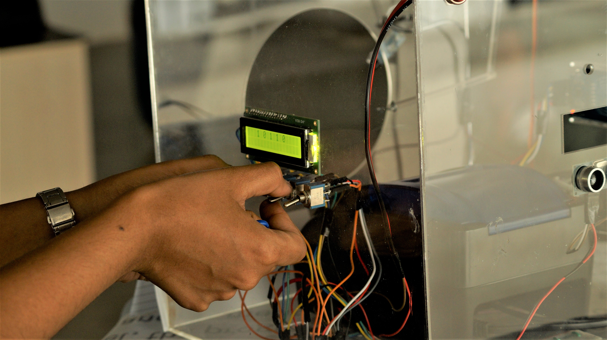
Photo by Harsh Bahety
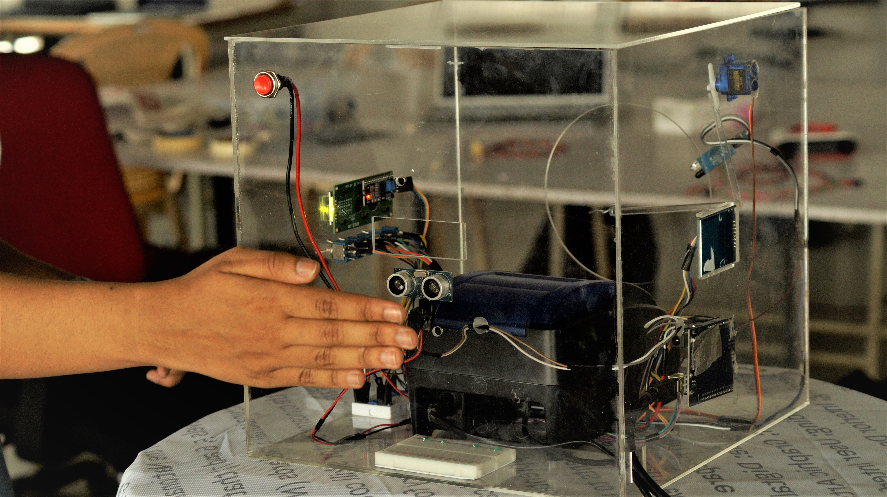
Photo by Harsh Bahety
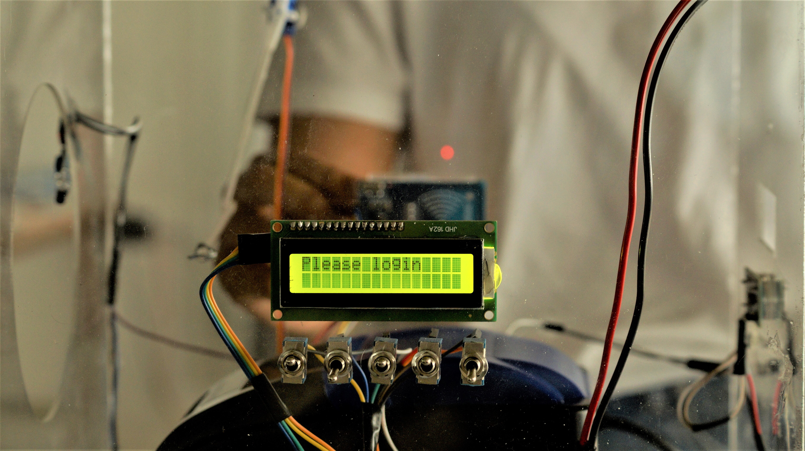
Photo by Harsh Bahety
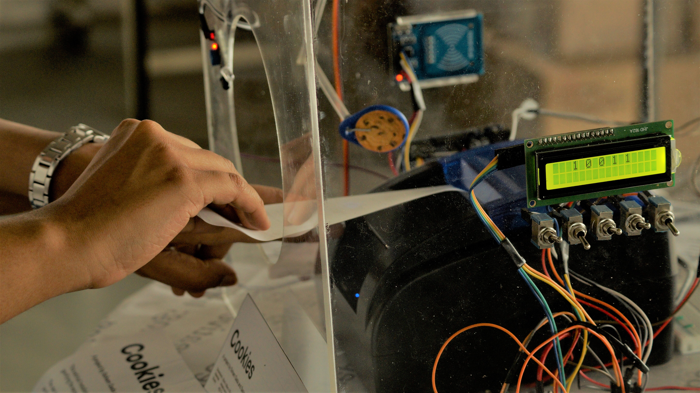
Photo by Harsh Bahety

The whole point of this was to make users feel the hindrance in a physical sense, and make them think about the times when they do they same thing on websites. The objective behind the paper with concise information is so that they can learn a little about cookies and be a little more mindful next time. Instead of pressing ‘Accept all cookies’ they spend 30 seconds to select their preferences and allow only those cookies which they are fine with.
Process
Initial Plan
My colleague, Sanjana Kappagantula and I sat and brainstormed a lot of ideas. Initially our plan was not to make a project on websites, but it was focused on mental health. Eventually, we felt that the concept wasn’t fitting under the brief given in the class. Hence, we decided to completely change our project. Information Barriers became the new topic. We decided to make a project which talks about the protocol which a lot websites make the user follow before the user can even do what they had come to website for. Since we both had first hand experience in this, it wasn’t difficult to find common grounds and start working on it.
Work in Progress
We both felt it was frustrating to use such websites, hence we decided to make that our main concept, a satire to website protocols which act as information barriers. We decided to make a box which acts a website and inside it we keep a thermal printre which represents information and it has multiple barriers which represent the protocol.
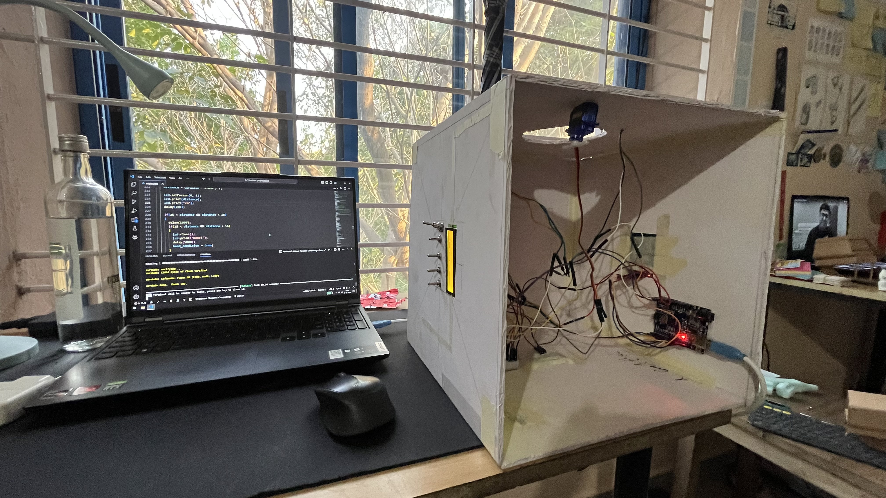
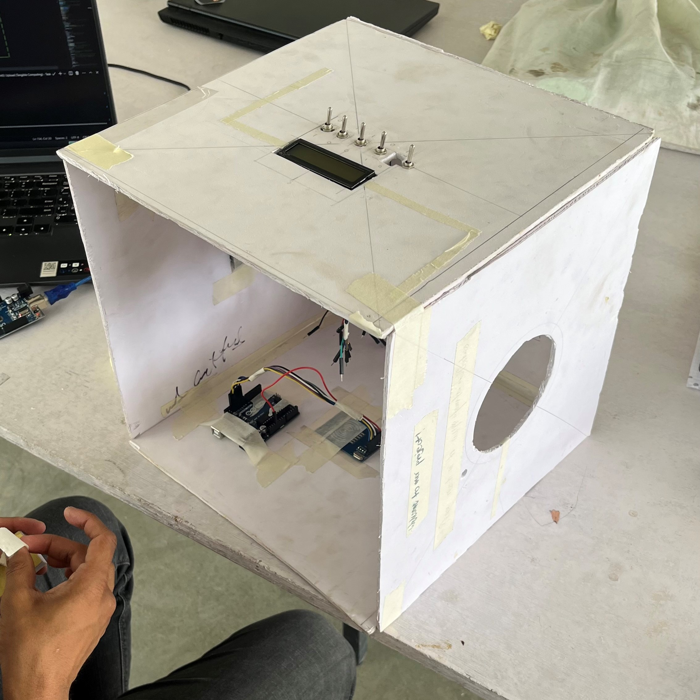
We made a protoype using sunboard. This prototype was to scale. It really helped us make a lot of decisions for the final box. Witout it we would have to redo the final box about 10 times.
We wrote pseudo code for a lot of parts to understand the logic easier. Pseudo code helped to structure the whole code into a loop which runs on multiple conditional (if/else) statements.
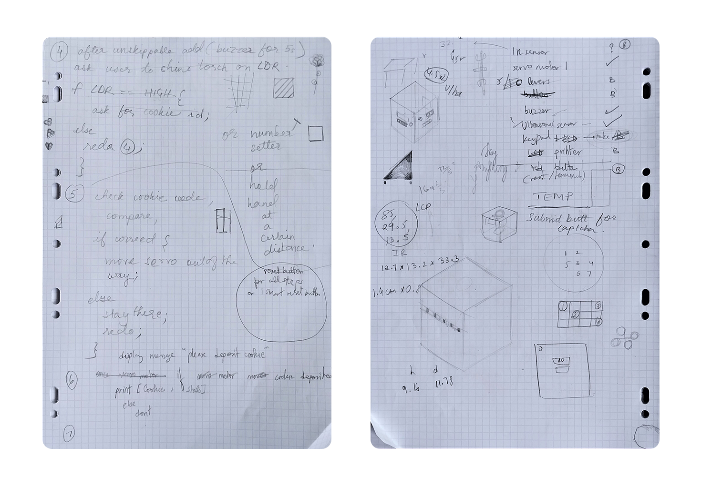
Finally we completed the prototype by coding everything in C++ for the Arduino UNO.
The Code (C++)
Required Libraries
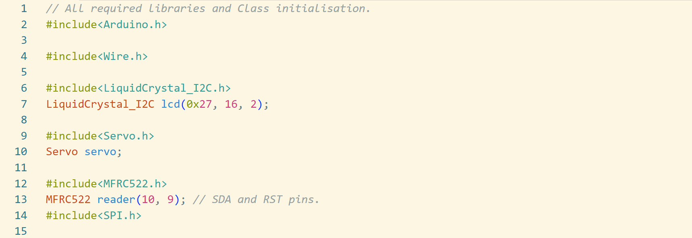
Infrared Light Sensor
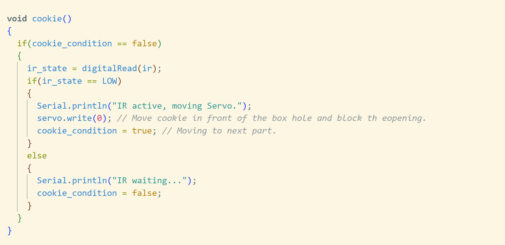
Captcha
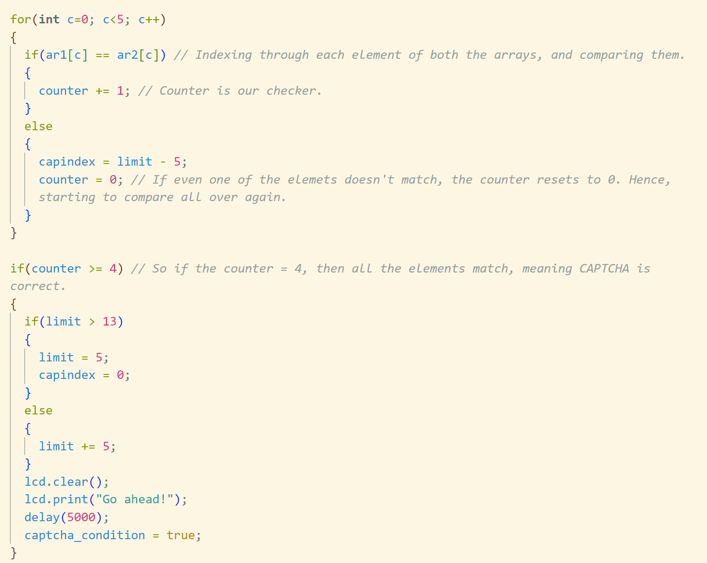
Hand
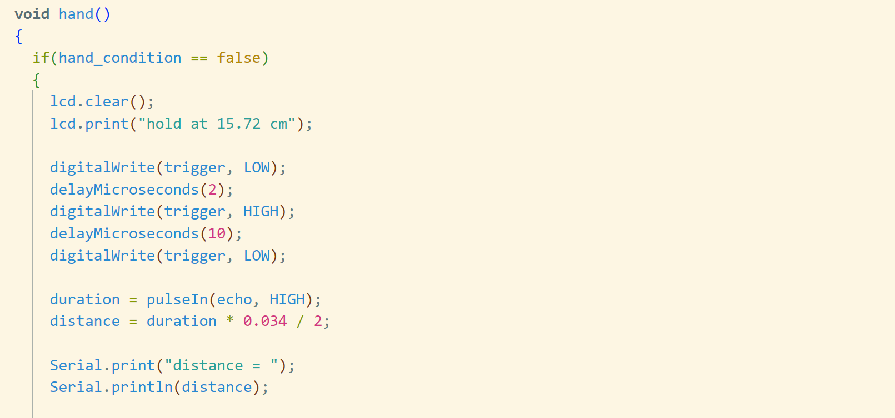
RFID
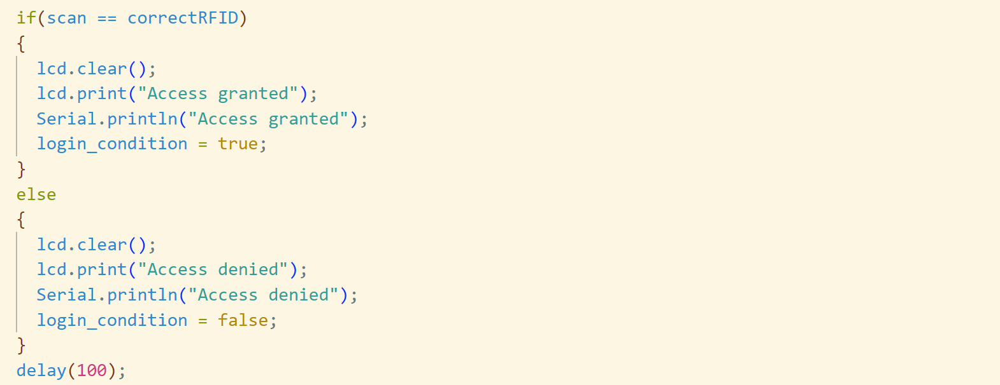
Reflection
This project was one of my most ambitious projects yet. In the beginning I was really focused on just making everything work. Because I was afraid that when I connect so many components to the arduino, I might run into a problem to make everything run together. But eventually I was able to make all of it work together. When that was achieved we started focusing more on the interaction part of the project, and defined a step by step proceduce, a sequence of events that would happen when any user would start to interact with it. This is where we decided to add ligts to the box to guide users to each side of box for the next interaction. But the lights did not seem to go with the whole visual theme of theme of the box, hence, they were discarded at the end.
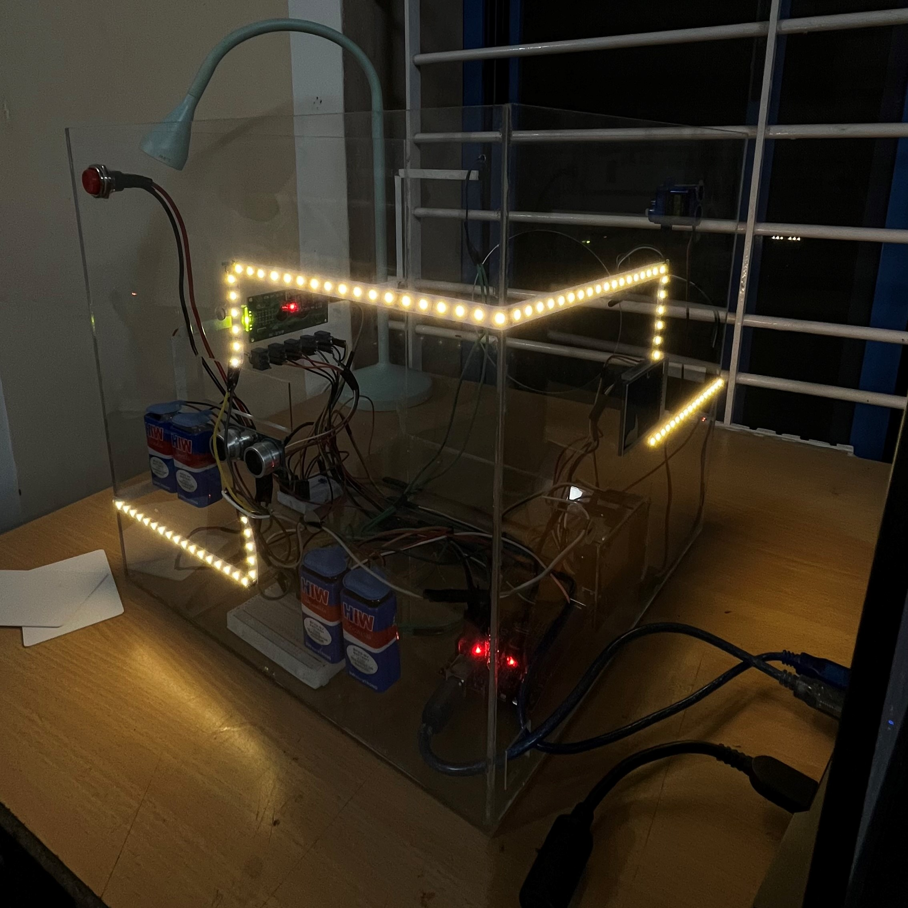
In the end the whole project was successful and the exhibition was done seamlessly. The project was a hit, because it conveyed the main message very clearly. People loved it when they all were able to take back a small piece of paper back home which gave them information. Even kids were able to interact with the project, and understand the jist of it.